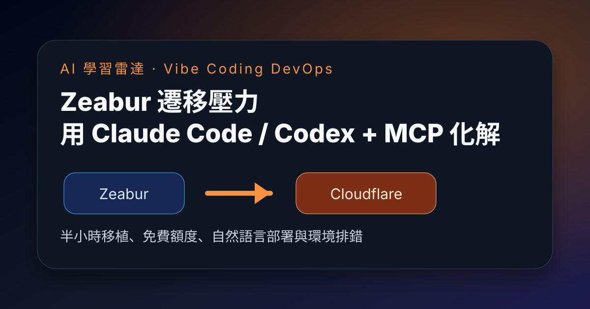

Threads｜AI 焦慮所：Zeabur 用戶半小時遷移到 Cloudflare，Claude Code / Codex + MCP 降低 Vibe Coding 維運門檻

一句話摘要
Zeabur 事件後，AI 焦慮所分享自己把服務遷移到 Cloudflare 的經驗：原本因為已訂閱 Zeabur 近兩年、花費數百美金而拖延搬家，但在 Claude Code、Codex 與 MCP 協助下，約半小時完成移植，並在 Cloudflare 免費方案內順利運行。
來源脈絡
- 來源：AI 焦慮所（@ainxiety.lab）Threads 分享。
- 連結：https://www.threads.com/@ainxiety.lab/post/DcpfNUFAR48
- 可見資訊：約 1.6K views，標籤包含 `zeabur`。
- 事件背景：Zeabur 環境變數外洩與 AI API Key 遭盜用事件後，已有使用者開始把服務搬到 Railway 或 Cloudflare 等平台。
貼文重點
AI 焦慮所用「Cloudflare 完全治好了我的拖延症」描述這次遷移：
- 訂閱 Zeabur 將近兩年，累積花費數百美金。
- 原本想到要把服務遷移到別的平台就覺得很痛苦，因此一直拖延。
- Claude Code 與 Codex 都可以連接 MCP，用自然語言方式部署。
- 遇到版本或環境問題時，不需要自己逐一排查，對 Vibe Coding 新手很友善。
- 約半小時完成移植，服務已在 Cloudflare 上順利運行。
- 目前仍在免費方案額度內，沒有額外費用，作者也認為安全性相對更有保障。
為什麼值得保存
這則貼文是 Zeabur 事件後的第二種用戶遷移樣本：前一則 Harold 哈洛分享搬到 Railway，這則則是搬到 Cloudflare。兩者共同顯示，安全事件不只造成「撤銷金鑰」這種短期補救，也會推動使用者重新選擇部署平台。
更重要的是，AI coding agent 正在改變平台遷移的成本結構。過去開發者會因為環境差異、版本衝突、設定檔、部署流程與 DNS / domain 設定而拖延搬家；現在 Claude Code、Codex 若能透過 MCP 或平台 CLI 取得足夠上下文，就可以把很多摩擦轉成自然語言協作。
對 Vibe Coding 與課程設計的啟發
這則很適合放在「AI 協作維運」或「Vibe Coding 到 production」單元：
- 不只教學生如何把 demo 做出來，也要教如何遷移、部署、排錯與控管成本。
- MCP / CLI / 文件清晰度會成為平台是否適合 AI agent 操作的重要指標。
- Cloudflare、Railway、Zeabur 這類平台的比較，不只看免費額度，也要看安全模型、環境變數治理、日誌、rollback、domain / DNS 整合與 agent 可操作性。
- 對新手來說，AI agent 可把「看不懂錯誤訊息」降低為「描述需求，讓 agent 讀 log 與改設定」的流程。
建議行動
若團隊近期也想從 Zeabur 或其他 PaaS 遷移，可以把這則心得轉成檢查清單：
- 先盤點服務類型：靜態站、API、背景 worker、資料庫、排程任務分開看。
- 對每個服務建立可重現部署文件：環境變數、build command、start command、port、domain、資料庫連線。
- 讓 Claude Code / Codex 讀取部署文件與錯誤 log，再協助產生 Cloudflare / Railway / 其他平台設定。
- 遷移完成後，做 smoke test、費用檢查、流量限制與 secrets 輪替。
- 保留 rollback 路徑，不要在新平台尚未驗證前刪除舊服務。
與前兩則 Zeabur 歸檔的關係
這則可與兩篇既有歸檔互相參照：
- Zeabur 事件背景：https://m11808008.github.io/hermes/knowledge-base/articles/2026-08-29-inside-zeabur-environment-variable-leak-api-keys-stolen.html
- Zeabur ➜ Railway 遷移心得：https://m11808008.github.io/hermes/knowledge-base/articles/2026-08-30-threads-yuwinjhan-zeabur-to-railway-migration.html
三則合起來形成一條完整脈絡：平台憑證外洩 → 使用者輪替與撤離 → 使用者重新比較 Railway / Cloudflare 等替代部署方案 → AI coding agent 降低遷移門檻。
原始連結
Threads：
https://www.threads.com/@ainxiety.lab/post/DcpfNUFAR48
分享連結：
https://www.threads.com/share/BAR4Ip4QT9/
Cloudflare：